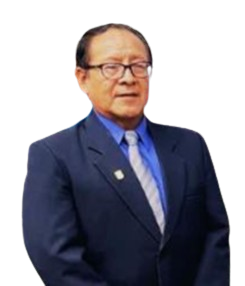

Director General

Lic. Alipio Ramos Yarasca
Responsable en gestionar con la UGEL 05 con un firme compromiso con la formación integral de los estudiantes y con el apoyo de los padres de familia.

Es un honor darles la más cordial bienvenida a nuestra página web oficial.
Aquí encontrarán información actualizada sobre nuestras actividades académicas,
proyectos, eventos, logros de nuestros estudiantes y toda la comunidad educativa.
Los invitamos a recorrer cada sección de esta página web, diseñada para mantenerlos informados y fortalecer el vínculo entre la institución, los estudiantes y los padres de familia.
¡Gracias por ser parte de nuestra comunidad educativa!

Nuestra misión es formar estudiantes íntegros y competentes, a través de una educación de calidad, centrada en valores, disciplina y responsabilidad. Buscamos desarrollar en nuestros alumnos habilidades académicas, sociales y éticas que les permitan construir un futuro con propósito, contribuyendo activamente al bienestar de su comunidad y sociedad.
La IEP María de los Ángeles aspira a ser una institución líder en educación integral en San Juan de Lurigancho y a nivel nacional, reconocida por su compromiso con la formación académica, ética y emocional de sus estudiantes. Buscamos seguir creciendo como una comunidad educativa innovadora, solidaria y transformadora, que prepara a las nuevas generaciones para construir un futuro justo, humano y sostenible.
El objetivo de nuestra institución educativa “María de los Ángeles” es brindar una formación integral a nuestros estudiantes, desarrollando sus capacidades cognitivas, sociales, emocionales y éticas, con el fin de prepararlos como ciudadanos responsables, críticos, creativos y comprometidos con el desarrollo de su comunidad y del país.
Todo comenzó un 16 de junio de 1987, en el distrito de San Juan de Lurigancho, específicamente en la zona de Mariscal Cáceres, una comunidad en crecimiento que, en ese entonces, necesitaba con urgencia espacios educativos que ofrecieran una formación de calidad para niños y jóvenes.
Movido por este desafío y con un fuerte compromiso con su comunidad, el Sr. Elvis Villarroel J, junto con el apoyo de su familia, decidió dar un paso valiente: fundar uno de los primeros colegios particulares de la zona. Así nació la IEP María de los Ángeles, con una clara misión desde el primer día, brindar una educación integral, basada en valores y orientada al desarrollo académico y personal de cada estudiante.
En sus inicios, la institución contó con 15 profesores comprometidos con la enseñanza y cientos de alumnos, cuyos padres confiaron en este nuevo proyecto educativo que abría sus puertas con ilusión, esfuerzo y esperanza. A lo largo de los años, la IEP María de los Ángeles ha crecido de manera constante, aumentando su capacidad, ampliando sus instalaciones y adaptándose a los cambios del entorno educativo.
Hoy, seguimos trabajando con la misma pasión y entrega que inspiró nuestros primeros pasos, formando generaciones de estudiantes con sólidos valores, pensamiento crítico y una profunda vocación de servicio.
Responsable en gestionar con la UGEL 05 con un firme compromiso con la formación integral de los estudiantes y con el apoyo de los padres de familia.

Fundadora y líder institucional desde 1987, con amplia experiencia en gestión educativa y un firme compromiso con la formación integral de niños y jóvenes.
Responsable de coordinar los procesos pedagógicos, planes curriculares y el desarrollo académico en todos los niveles educativos.

Encargado de la gestión pedagógica y formativa en la etapa preescolar, coordinando estrategias que garanticen una educación integral.
Lidera el equipo de docentes, asegurando una educación sólida y ordenada, fomentando el respeto, la disciplina y los valores institucionales.
Nuestro cuerpo docente está conformado por más de 15 profesores en los diferentes niveles educativos. Todos ellos cuentan con formación profesional, experiencia en el aula y capacitación continua en metodologías activas, uso de tecnologías educativas y formación en valores.
Cada uno de nuestros docentes cumple un rol fundamental en la formación de nuestros estudiantes, promoviendo el aprendizaje significativo, el pensamiento crítico y el desarrollo emocional.